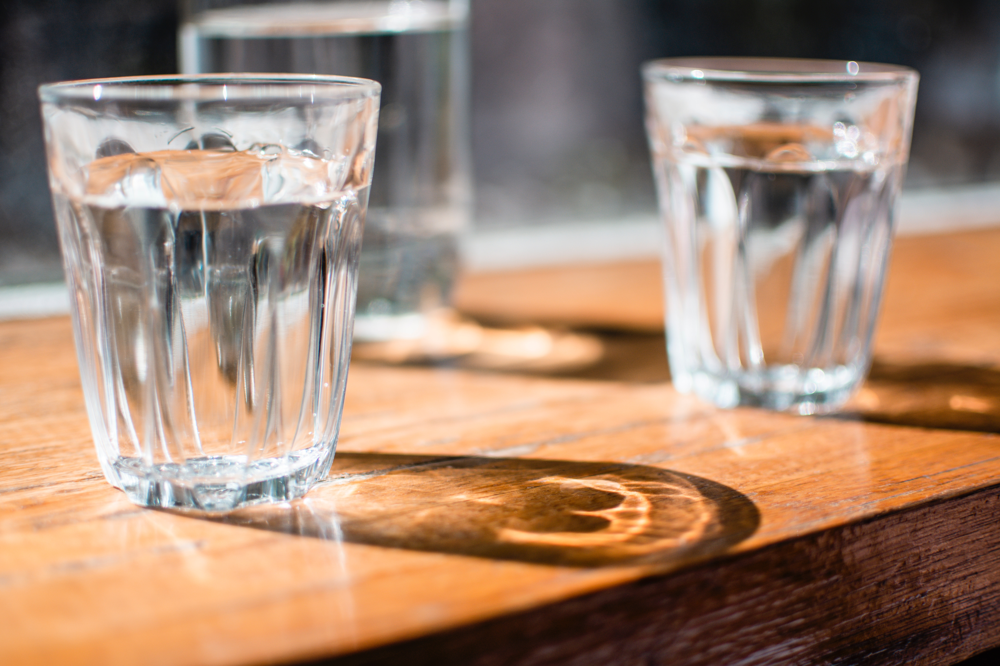
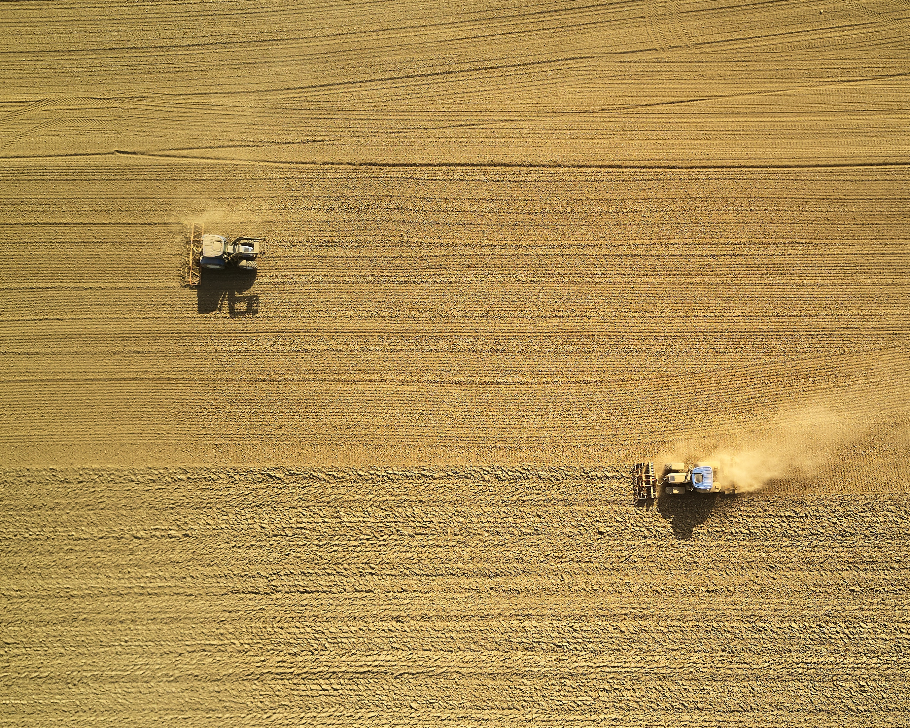

MY GREEN LIFE
SUSTAINABLE FOOD
Food is an integral part of our lives and we often overlook the amount of waste that is produced as a byproduct of our consumption. The process of production, retail, consumption and waste-treatment have played a role in damaging and wasting the precious resources of our environment.

Over 1/3 of all food produced globally goes to waste

All the world’s nearly one billion hungry people could be fed on less than a quarter of the food that is wasted in the US, UK and Europe

25% of the world’s fresh water supply is used to grow food that is never eaten

2.3 billion people are joining the planet by 2050 – this will require a 60-70% increase in global food production
These facts sound daunting, but you’ve already taken the first step of action in helping reduce food waste for our environment – by staying aware.
Take initiative by playing your part in our delicate ecosystem! This website is designed to best assist you in this, so please, explore the following sections below to further understand what better choices you can make the better our environment!
SMALL STEPS MAKE A DIFFERENCE.